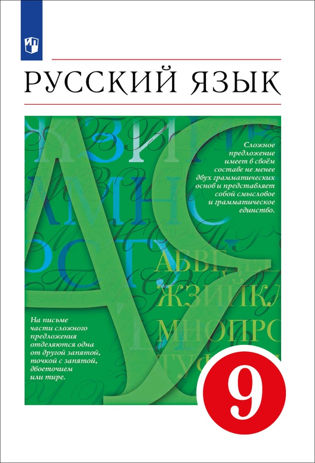

Обложка из каталога «Просвещения».
Разбор учебника
Учебник М. М. Разумовской и др.
Линия М. М. Разумовской, С. И. Львовой, В. И. Капинос и др. (издательство «Просвещение»). В учебнике много внимания уделено сложным предложениям и работе с текстом, поэтому он хорошо подходит для заданий 2–5 и 10–12.
§§ 1–35
диапазон параграфов 9 класса
Просвещение
издательство
Текст
сильная сторона линии
Важно: соответствие параграфов заданиям ориентировочное. В разных изданиях нумерация и последовательность тем могут отличаться — сверяйтесь со своим экземпляром.
Где почитать или скачать учебник
Открытая текстовая версия с оглавлением размещена на «Моём учебнике». Полный файл учебника на этом сайте не размещён: для электронной формы обратитесь к каталогу «Просвещения» или к своему экземпляру книги.
Оглавление: что пригодится на экзамене
| Параграфы | Тема | Задания ОГЭ |
|---|---|---|
| §§ 1–5 | Русский язык, функциональные разновидности, фонетика, лексика, морфемика, морфология и синтаксис, орфография и пунктуация | 6–9 |
| § 6 | Типы речи | 10–12 |
| §§ 7–10 | Сложное предложение, типы сложных предложений, сложносочинённое предложение | 2–5 |
| § 11 | Художественная речь и язык художественной литературы | 10–12 |
| §§ 12–21 | Сложноподчинённые предложения: определительные, изъяснительные, обстоятельственные и их виды | 2–5 |
| §§ 22–29 | Тексты и жанры: путевые заметки, рецензия, эссе; сложное предложение с несколькими придаточными | 10–12, 3–5 |
| §§ 30–33 | Бессоюзное сложное предложение и его разновидности | 3–5 |
| §§ 34–35 | Деловая речь и сложное предложение с разными видами связи | 4, 5, 10 |
Соответствие заданиям 2–12
| Задание | Что повторить | Параграфы |
|---|---|---|
| 2 | Грамматическая основа | § 5, § 7, § 12 |
| 3 | Виды предложений | §§ 7–10, §§ 12–35 |
| 4 | Правило и пример знака | §§ 8–10, §§ 12–35 |
| 5 | Расстановка знаков | §§ 7–35 |
| 6 | Объяснение написания слова | §§ 3–5 |
| 7 | Пропущенные буквы | §§ 3–5 |
| 8 | Нормы и форма слова | §§ 2–5, §§ 11, 22, 27, 29 |
| 9 | Замена словосочетания | §§ 5, 7–10 |
| 10 | Содержание текста | § 6, § 16, §§ 22–29 |
| 11 | Средства выразительности | § 2, § 11 |
| 12 | Фразеологизм | § 4 |
Как заниматься по этому учебнику
- Начните с §§ 1–5: там компактно повторены знания о слове и предложения, нужные для заданий 6–9.
- По §§ 7–35 выстройте лестницу «простое → сложносочинённое → сложноподчинённое → бессоюзное → разные виды связи».
- По §§ 6, 11, 22–29 тренируйте анализ текста: тема, основная мысль, стиль, изобразительные средства.
- После каждого параграфа возвращайтесь к соответствующему заданию на странице «Задания 2–12».